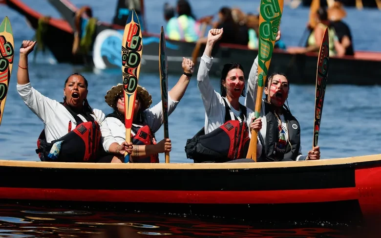
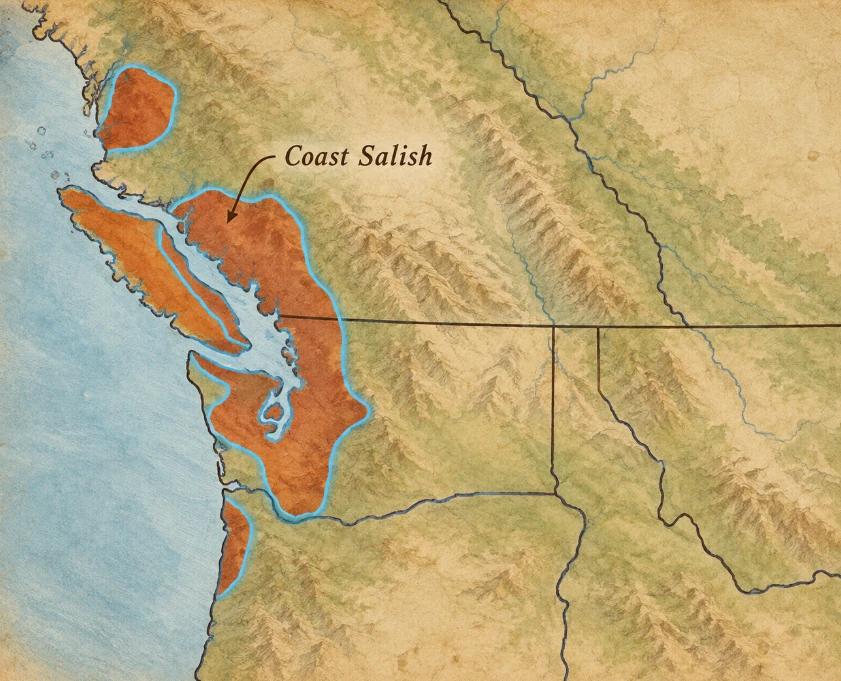
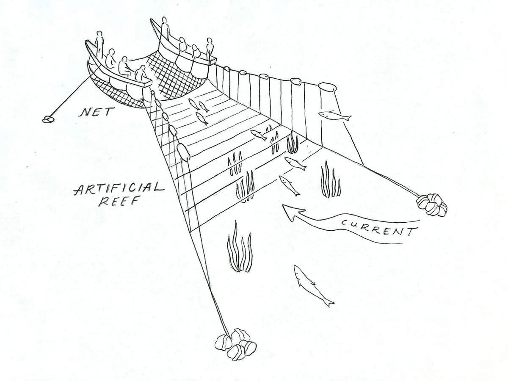
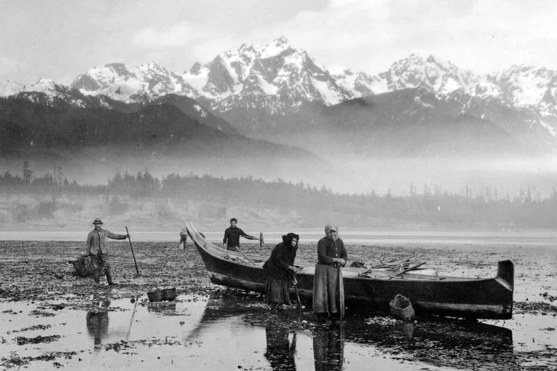
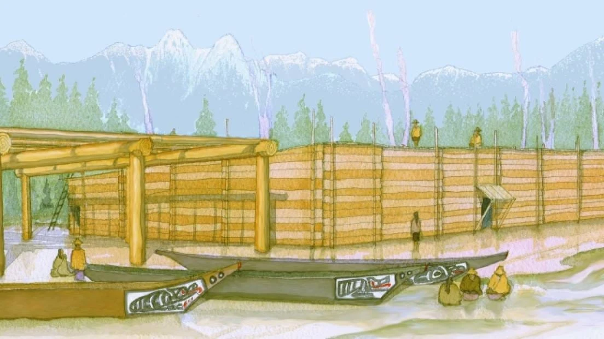
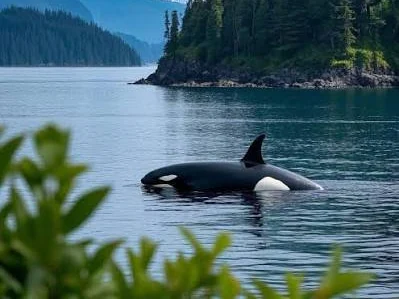

Shellfish
Clams, mussels, oysters, crab, and other shoreline foods turned tidal zones into productive food places. Harvesters needed to understand tides, seasons, and particular beaches.
Coast Salish does not name one tribe. It refers to many distinct Native nations connected by related languages and a broad cultural region around the Salish Sea, Puget Sound, the Strait of Georgia, the Strait of Juan de Fuca, and neighboring rivers and islands. Lummi, Puyallup, Muckleshoot, Suquamish, S'Klallam, Stillaguamish, Nisqually, Swinomish, and many others have their own governments and histories.


“Coast Salish” is a broad family of peoples and languages—not a single nation. The shared waters of the Salish Sea connected communities without erasing their differences.
The Salish Sea includes Puget Sound, the Strait of Juan de Fuca, and the Strait of Georgia. Hundreds of islands, tidal channels, bays, and river mouths create a landscape where canoe travel can connect communities more directly than overland travel.
Villages were often placed near reliable fresh water, shellfish beaches, salmon routes, camas prairies, and protected canoe landings. Seasonal camps extended that network to specific harvesting places.
Because water connected so many places, a community's geography was larger than the shoreline directly in front of its village. Canoe routes linked relatives, trading partners, fishing places, ceremonial gatherings, and neighboring nations across what are now the U.S.–Canada border and state or provincial boundaries.
That is also why a modern political map can be misleading. Coast Salish homelands overlap and connect around waterways; they do not fit neatly into simple blocks like modern states.


Coast Salish fishers developed several highly specialized salmon technologies. One of the most distinctive is reef-net fishing, especially associated with Northern Straits communities such as Lummi and Saanich peoples.
Two canoes hold a net in place while underwater leads guide migrating salmon toward it. Successful fishing depends on knowing tides, salmon routes, timing, and specific reef-net locations. Lummi sources describe the reef net as an invention of their ancestors and part of the Nation’s historical prosperity.
The diagram makes clear that reef-net fishing was not simply “throwing a net into the water.” Fishers had to position the canoes and gear in the correct place, understand how salmon moved through the current, watch for approaching fish, and work together at exactly the right moment.
That combination of environmental knowledge and engineering is one reason fishing sites themselves could be important inherited places rather than interchangeable spots along the coast.
Salmon mattered enormously, but Coast Salish food systems drew from beaches, tidal flats, rivers, wetlands, forests, and open prairies as well as the sea.
Clams, mussels, oysters, crab, and other shoreline foods turned tidal zones into productive food places. Harvesters needed to understand tides, seasons, and particular beaches.
Camas, berries, roots, shoots, and other plants were harvested, managed, and traded. Important plant places could be revisited and cared for generation after generation.
Prairies, wetlands, estuaries, and forests were shaped through generations of burning, harvesting, transplanting, and care. “Wild” landscapes were often actively managed landscapes.


Large cedar-plank houses anchored many winter villages. Heavy posts and beams supported broad cedar boards, creating substantial homes that could shelter extended households and serve as places for work, visiting, teaching, and ceremony.
The house was more than a weatherproof box. Where people sat, worked, stored belongings, hosted visitors, and gathered with relatives reflected family and community relationships. Houses also tied people to particular village sites across generations.
Coast Salish weaving traditions used mountain-goat wool and, historically, wool from specially raised woolly dogs in parts of the region. Cedar bark, cattails, and other fibers were also woven into mats, baskets, hats, and clothing.
Taken together, houses, canoes, woven goods, fishing technology, and managed food places show how heavily Coast Salish life depended on skilled use of local materials rather than on a single resource.
In the 1850s, several Coast Salish nations signed treaties with the United States. They ceded enormous areas of land while reserving rights to fish at “usual and accustomed” places. Those words became crucial because many traditional fishing sites lay outside reservation boundaries.
A treaty right to fish is far less useful if salmon habitat disappears. That is why modern tribal fisheries work often includes stream restoration, water-quality protection, and rebuilding estuaries as well as regulating harvest.
Since 1989, canoe families from Native nations around the Pacific Northwest have traveled by canoe to host communities. Journeys involve weeks of paddling, protocol, songs, food, language, youth participation, and visiting between nations.
The canoe is therefore not just an old transportation technology. It is a modern classroom, a community project, a physical challenge, and a way of reconnecting people across the same waterways their ancestors traveled.

The park is best known for the U.S.-British “Pig War,” but its newer interpretation pushes visitors to look deeper. San Juan Island has been Coast Salish homeland for thousands of years, and NPS materials explain reef-net fishing, salmon processing, and the importance of the Salish Sea long before military camps appeared.
That broader interpretation matters because the famous nineteenth-century boundary dispute took place in an already inhabited Native landscape. Long before American and British soldiers built camps, Coast Salish families were navigating these channels, harvesting food, maintaining fishing places, and connecting communities by canoe.
Looking at the islands from the water also changes the geography: channels that can look like barriers on a road map become routes linking fishing grounds, village sites, and neighboring communities.
Explore San Juan Island with NPS →Coast Salish nations operate governments, schools, fisheries programs, cultural departments, businesses, health services, language programs, and natural-resource agencies. Many are major employers in their regions.
The modern story often returns to the same connections seen in the past: water, salmon, family, place, and canoe travel. What changed is not whether these cultures survived, but the political and environmental conditions in which communities work to sustain them.
Because Coast Salish describes many nations rather than one government, modern priorities and programs differ from community to community. What they share is that these nations remain political, cultural, and economic actors in the same region where their histories began.

Why does a fishing right matter if pollution or habitat loss means there are no fish left to catch?